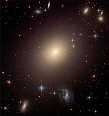

Disclaimer:This is my very first attempt in making this page public. These are just the basics. I will probably learn to edit the background and all the other stuff like fonts and all. I have used only html5 for creating this. Editing will come under CSS (Cascading Style Sheets) software. P.S. If you are opening this in a chrome tab you could see the logo of atoms (hard to see because of the black colour) which I inserted as a start for editing webpages.
THIS IS A SAMPLE PAGE WITH RANDOM STUFF!!!!
FEW POPULAR BOOKS:
Stephen Hawking-
A Brief History Of Time
Brief Answers to the Big Questions
The Grand Design
J.K Rowling-
The Harry Potter Series
Fantastic Beasts and Where to Find Them
The Silkworm
FEW TYPES OF GALAXIES:
Spiral Galaxy: Spiral galaxies are twisted collections of stars and gas that often have beautiful shapes and are made up of hot young stars. Most of the galaxies that scientists have discovered so far are spiral galaxies. The Milky Way
Elliptical Galaxy: An elliptical galaxy is a type of galaxy with an approximately ellipsoidal shape and a smooth, nearly featureless image. They are one of the three main classes of galaxy described by Edwin Hubble in his Hubble sequence and 1936 work.

NGC 1316 in Former Cluster
Irregular Galaxy:An irregular galaxy is a galaxy that does not have a distinct regular shape, unlike a spiral or an elliptical galaxy. Irregular galaxies do not fall into any of the regular classes of the Hubble sequence, and they are often chaotic in appearance, with neither a nuclear bulge nor any trace of spiral arm structure. IC 4710